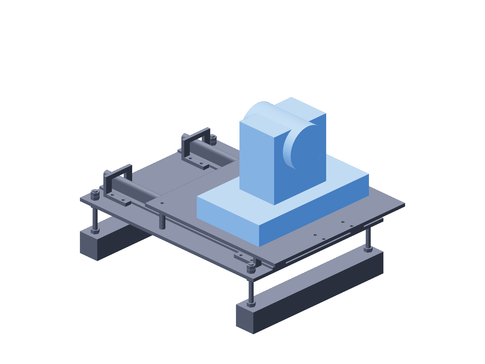

Observation / cameras148 / 179
Mount each camera by its tripod base
The camera is level and fixed by its 1/4-20 tripod mount. The sliding slot sets lens working-distance placement without attaching anything to the PTZ head.
Add2 FoMaKo K20UH · 1/4-20 tripod screws / washers · USB data and camera power leads
Tools / setupTripod screw driver · socket-depth check · no lens module installed

- Measure the actual tripod socket's allowable insertion depth; use the selected screw/washer stack that clamps before bottoming.
- Start the screw through the slot into the tripod socket and align the camera forward along the rails.
- Seat the tripod screw while holding the base square. Support cables at the fixed plate with a moving service loop.
- Check the clear PTZ head can complete its startup sweep before the lens stand is fitted.
Ready when
The base is clamped without socket bottoming and the clear PTZ head has no contact during its self-test. A rocking base, bottomed screw or restricted head fails the mount. Correct the metal attachment before installing a lens.